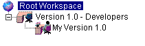

Workspaces are defined hierarchically, and they can be public or private. Workspaces are created by deriving a new workspace from an existing workspace. The Root Workspace is at the top of the hierarchy because when a new project database is created, it automatically has a Root Workspace. Public workspaces are derived from the Root Workspace or existing public workspaces, and private workspaces are derived from the Root Workspace, a public workspace, or another private workspace.
When a workspace is created, it inherits the workspace settings defined in the workspace from which it was derived, but its own workspace settings override any inherited settings.
For example, there are three workspaces in the graphic below: Root Workspace, Version 1.0-Developers, and myVersion 1.0. The Root Workspace is the original workspace. The public workspace, Version 1.0-Developers, was derived from the Root Workspace. The private workspace, myVersion 1.0, was derived from the public workspace.

The Administrator created the public workspace Version 1.0-Developers to be used by all of the Developers working in the Version 1.0 project database. This workspace inherits some basic settings from the Root workspace but it also overrides some of the workfile locations so that the work settings are specific to where Developers work on the network. One of the Developers then created the private myVersion 1.0 workspace. This private workspace can only be used by the Developer who created it; no one else has access to it or can even see it. The Developer created this private workspace so that she could use a workfile location on her local machine instead of using the public workfile location on the network.
Important: If you do not modify a work setting in a workspace, the value of the work setting is updated each time the value is modified in the workspace from which it was derived. However, if you change a work setting and then modify the original workspace, the value is not updated in the workspace because the value is no longer inherited from the original workspace.
For more information, refer to the Serena ChangeMan Version Manager User's Guide and the Serena ChangeMan Version Manager Administrator's Guide.
| About Workspaces | About Public and Private Workspace |
| Using the Root Workspace | Creating and Managing Multiple Public Workspaces |
| Creating Workspaces | Setting Your Workspace |